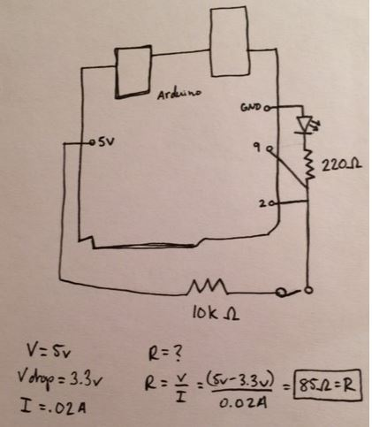
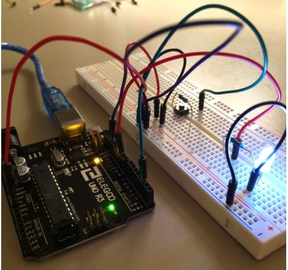
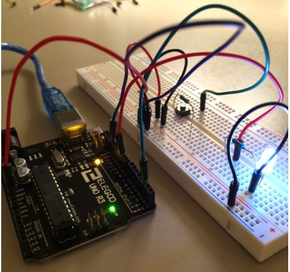

Assignment 2: Fade!

Schematic
 I used a 10K ohm resistor for the button because that is what we used in class. I used a 220 ohm resistor for the LED because according to my calculations the resistance needed to be greater than 85 ohms. Otherwise, the circuit would short.GIF and Pictures
 
In this circuit the button funtions as an input and the LED serves as an output. The button is controlled by pin 2 and the LED is controlled by pin 9.
A 5 volt arduino powers this circuit. When the button is pressed the LED turns off. When the button is not pressed the LED repeatedly fades.

In this circuit the button funtions as an input and the LED serves as an output. The button is controlled by pin 2 and the LED is controlled by pin 9.
A 5 volt arduino powers this circuit. When the button is pressed the LED turns off. When the button is not pressed the LED repeatedly fades.